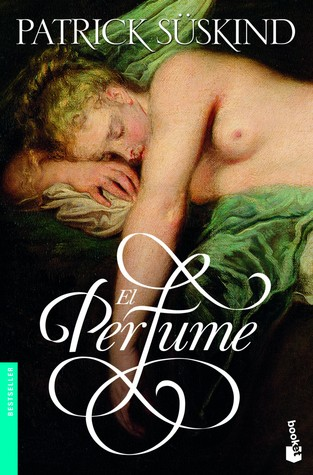

El perfume: Historia de un asesino
Reseña por Jorge I. Zuluaga

Ver reseña en GoodReads (necesita cuenta)
¡Qué libro!
Además de lo bien escrito, de lo bien desarrollados que están algunos de sus personajes, incluyendo, por supuesto, su singular protagonista, el superdotado olfativo Jean-Baptiste Grenouille —si algo siquiera similar a él existe o ha existido y se le puede poner nombre—, pero también otros dentro de cuya piel (a veces literalmente) se mete el autor y nos mete con él a todos quienes leemos, la novela es completamente enganchadora. La maestría que demuestra su autor en el tema de la variedad de los perfumes conocidos en el momento y de las técnicas para procesarlos es asombrosa.
El libro se divide en cuatro partes.
La primera, la mejor para mí, presenta el origen y el desarrollo del personaje, además del descubrimiento por otras personas de su existencia. También está allí narrado su primer crimen (espero que esta revelación no sea sorpresa para nadie que haya leído el título completo de la obra, je, je). Esta es la parte más rica en detalles sobre la casi inhumana capacidad de Grenouille para percibir el mundo con el olfato. Es la que describe con mayor detalle el paisaje olfativo de su tiempo, pero también el cultural y el social. Si la novela hubiera terminado al final de esa primera parte, ya habría sido una novela magistral.
La segunda parte es la más fantástica de todas, pero no por su atractivo, sino por los hechos narrados. El estilo y las historias contadas allí me hicieron, por un momento, pensar en esta obra como un libro de fantasía más que como una novela histórica con algunos ribetes de ciencia ficción (estirando mucho la definición del género). También se me vino a la cabeza el realismo fantástico de Juan Rulfo, García Márquez o Isabel Allende.
El clímax de la novela y la justificación definitiva de su nombre ocurre en la tercera parte, en la que Süskind vuelve a hacer aterrizar a Grenouille en su contexto social y lo convierte en el personaje que será hasta el final de la historia: el asesino que va en busca de "el" perfume definitivo. La cuarta y última parte no la vi venir. El final es completamente inesperado y eso habla nuevamente de la creatividad del autor. Es imposible quedar indiferente ante el desenlace de la historia.
Esta novela pudo ser escrita perfectamente en el siglo XIX, en el clímax mismo de las novelas y los cuentos góticos o como parte de las historias de misterio y aventuras de investigadores y detectives de la época. Fácilmente pudo salir de la pluma de Edgar Allan Poe más que la de un escritor medio anónimo de finales del siglo XX.
Precisamente sobre el misterioso Patrick Süskind (de él solo se conocen una o dos fotografías), a quien rodea un misterio casi tan grande como el de su singular personaje Jean-Baptiste Grenouille, debo decir que se me antoja que escribió este libro como una especie de autobiografía fantástica de sí mismo; juraría, sin ninguna evidencia (pero también sin ninguna duda), que algunas de las obsesiones de Grenouille eran también las obsesiones de su autor. Sé que decir esto es atrevido, mucho más si estamos hablando de una novela sobre un asesino de mujeres (Grenouille), pero es que no puedo entender ninguna otra versión de la relación del autor con el personaje, en la que el primero sea capaz de penetrar de manera tan profunda en la mente de un individuo singular como Grenouille. Tal vez, simplemente, estoy subestimando la capacidad de genios literarios como Süskind.
Espero volver a olvidar "El perfume" para leerlo nuevamente en una o dos décadas (si me alcanza la vida) como si fuera la primera vez.